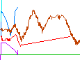

Tools
- Bar loading cheet sheet generator
- Select the plates you have available, it will tell you the most efficient way to load them on the bar for all possible weights.
- 1-10 rep max calculator
- Enter your maximum amount lifted for some number of reps, it'll print your max for all numbers of reps from 1 to 10, and some useful percentages of your one rep max.
- Target waist size calculator
- Enter your height and neck measurements, get a list of waist sizes corresponding to body fat percentage. Based on DoD formula
- Daily Target Weight Calculator
- Enter your current and target weights along with weight loss rate per week, and it will give you daily targets.
- pounds to kilograms conversion table
- Convert decimal cups to cups, 1/4 cups, tablespoons, etc.
Links
Personal
 Graph of my waist measurements and one rep maxes (squat, bench press, and deadlift) My home gym:
My home gym:
- Body Solid Pro-Power Rack (#WPR82), $329
- Body Solid Flat / Incline / Decline Bench (#FID31), $249
- 300lb olympic barbell set $159
- 2 4'x6' rubber mats, 2x$69
- 6 additional (Cap Barbell) 45lb plates
- Powerline Cable Tower PLA200, $205.94 shipped
Comment on this page.
Darxus' home page
Sun Jul 5 17:17:38 EDT 2009